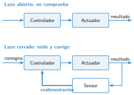

Control en lazo abierto y en lazo cerrado
🤔 Pienso5 min
Qué hago aquí: Piensa un momento y contesta con lo que ya sabes. No pasa nada si no lo sabes: es para empezar.
Pones pan en la tostadora y eliges el nivel 4. A veces sale bien y a veces quemado. ¿La tostadora mira el pan mientras lo tuesta?
📖 Leo y aprendo15 min
Qué hago aquí: Lee despacio, mira los dibujos y los ejemplos, y quédate con la idea clave del final.
Hay dos tipos de sistemas de control. Unos comprueban el resultado. Otros, no.

✏️ Hago25 min
Qué hago aquí: Haz las actividades en orden. Empieza siempre por las básicas.
Completa: en lazo el sistema no comprueba el resultado. En lazo un sensor mide el resultado.
Marca si es lazo abierto o cerrado.
| Sistema | Abierto | Cerrado |
|---|---|---|
| Microondas que calienta 2 minutos | ||
| Nevera con termostato | ||
| Semáforo con tiempos fijos | ||
| Robot siguelíneas |
Vuelve a la tostadora de Pienso. ¿Es lazo abierto o cerrado? ¿Por qué?
Dibuja el esquema del termostato en lazo cerrado. Marca la flecha de la realimentación.
✏️ Puedes responder escribiendo, con un dibujo o un esquema, o contándolo en voz alta.
¿Qué sensor le pondrías a la tostadora para que nunca se queme el pan? ¿Qué haría el controlador?
🚀 Amplío (si quieres saber más)
Qué hago aquí: ¿Has terminado? Lee la curiosidad o elige el reto. Es voluntario.
Escribe una ventaja y un inconveniente de un semáforo que detecta los coches que esperan.
✅ Compruebo5 min
Qué hago aquí: Contesta sin mirar la ficha y marca cómo lo llevas.